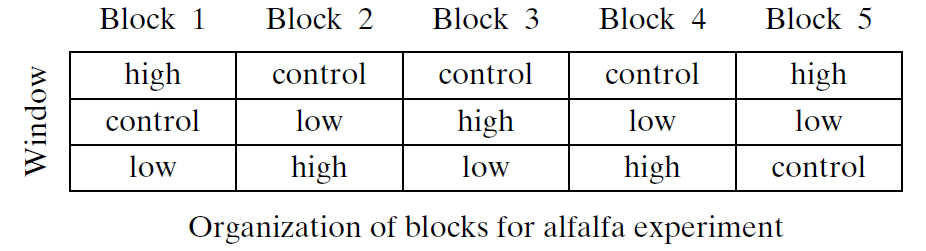
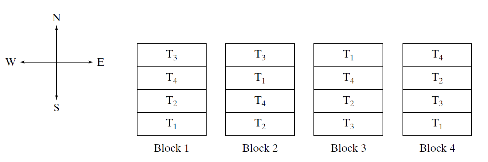
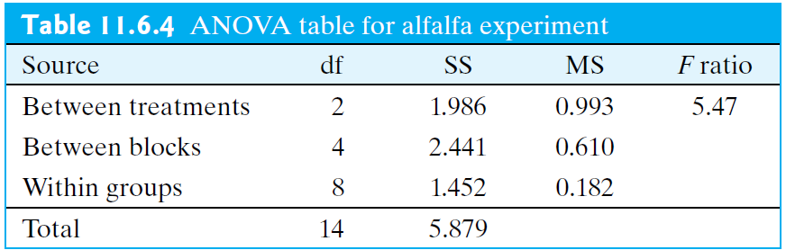
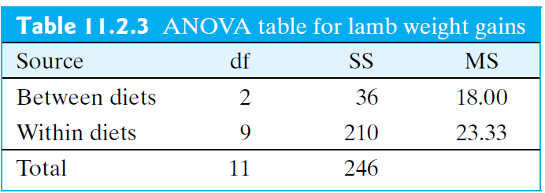

STAT 218 - Week 10, Lecture 1
March 11th, 2024
In a randomized blocks design,
Example: Alfalfa and Acid Rain Researchers were interested in the effect that acid has on the growth rate of alfalfa plants.

In general, we create blocks
As the preceding examples show, blocking is a way of organizing the inherent variation that exists among experimental units.
Ideally, the blocking should be arranged so as to increase the information available from the experiment.
Blocking in an Agricultural Field Study
When comparing several varieties of grain, an agronomist will generally plant many field plots of each variety and measure the yield of each plot.
Differences in yields may reflect not only genuine differences among the varieties, but also differences among the plots in soil fertility, pH, water-holding capacity, and so on.
An efficient way to use the available field area is

For the barley experiment of Example 11.6.4, how would agronomists determine the best arrangement or layout of blocks in a field? (Discuss with your neighbor)
Once the blocks have been created, the blocked allocation of experimental units is straightforward:
Agricultural Field Study (cont.d)
Consider the agricultural field experiment of Example 11.6.4.
| Block 1 | |
|---|---|
| T1 | Plot 4 |
| T2 | Plot 3 |
| T3 | Plot 1 |
| T4 | Plot 2 |
In the same way we cannot use a two-sample t test when data are paired, when an experiment has been blocked, we no longer can use our ANOVA methods that we learned in Section 11.4.


Factorial ANOVA
In a typical analysis of variance application there is a single explanatory (independent) variable or factor under study.
Two-way analysis of variance allows you to test the impact of two independent variables on one dependent variable.
The advantage of using a two-way ANOVA is that it allows you to test for an interaction effect
The concept of interaction occurs throughout biology.
Growth of Soybeans A plant physiologist investigated the effect of mechanical stress on the growth of soybean plants. Individually potted seedlings were randomly allocated to four treatment groups of 13 seedlings each. Seedlings in two groups were stressed by shaking for 20 minutes twice daily, while two control groups were not stressed. Thus, the first factor in the experiment was presence or absence of stress, with two levels: control or stress. Also, plants were grown in either low or moderate light. Thus, the second factor was amount of light, with two levels: low light or moderate light. This experiment is an example of a 2 * 2 factorial experiment; it includes four treatments:
Treatment 1: Control, low light
Treatment 2: Stress, low light
Treatment 3: Control, moderate light
Treatment 4: Stress, moderate light
After 16 days of growth, the plants were harvested, and the total leaf area (\(cm^2\)) of each plant was measured.
Categorical IVs: (1) Presence or absence of stress and (2) Amount of light with 2 levels
Continuous DV: total leaf area (\(cm^2\))